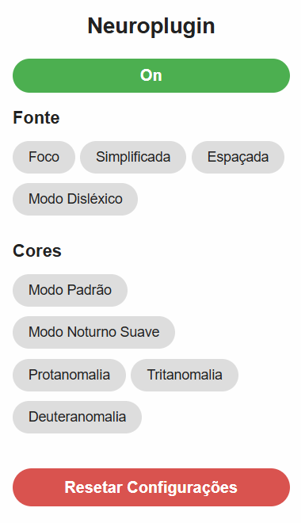
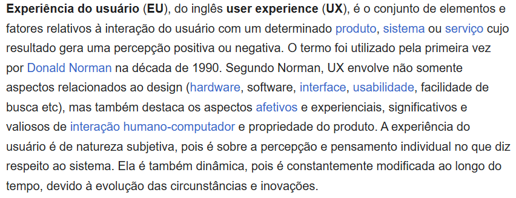
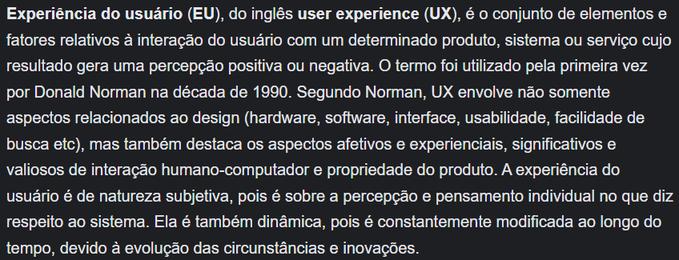
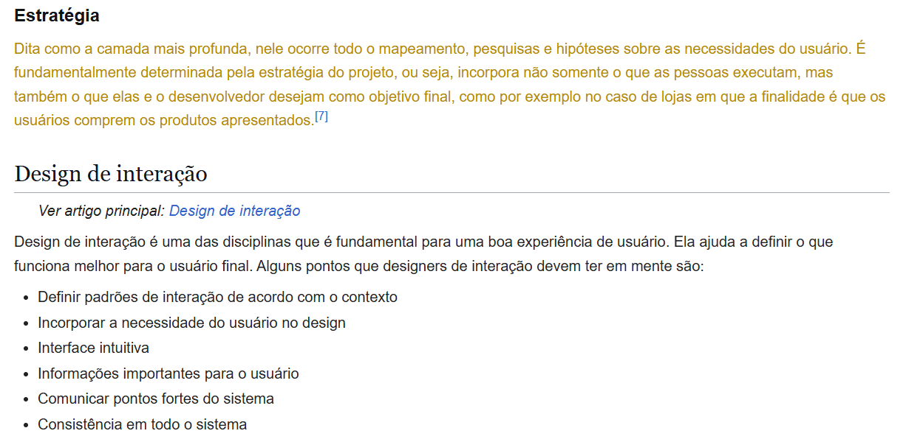
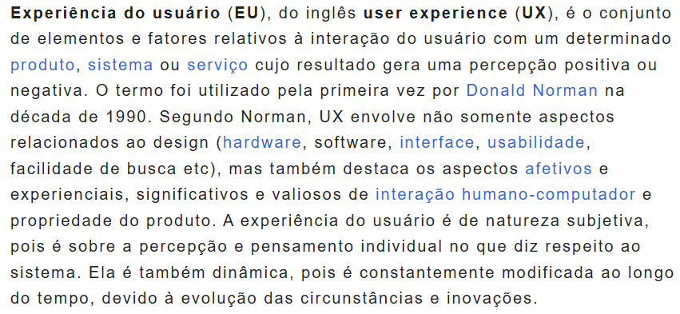
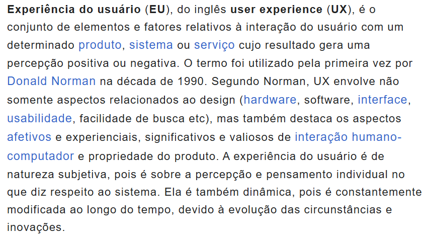

Simplicidade visual
Organização compacta dos controles, com poucos elementos e identificação direta das funções.
Uma extensão de acessibilidade para tornar a navegação na web mais adaptável a diferentes necessidades cognitivas e visuais.
O Neuroplugin é uma extensão desenvolvida para o Google Chrome que oferece recursos de personalização visual, leitura e foco. O projeto foi criado como Trabalho de Conclusão de Curso em Ciência da Computação, combinando pesquisa exploratória, princípios de UX/UI, prototipação, desenvolvimento e testes técnicos.
A extensão permite que o usuário ajuste a apresentação de páginas da web de acordo com suas preferências de leitura e necessidades visuais.
Por meio de uma interface compacta, é possível ativar recursos como espaçamento de texto, leitura simplificada, modo foco, modo noturno suave e filtros de daltonismo.

A navegação na web envolve diferentes elementos visuais, textos, cores e estruturas de informação.
Para pessoas com diferentes perfis cognitivos e perceptivos, determinados padrões de apresentação podem criar barreiras relacionadas à concentração, legibilidade e conforto visual.
O Neuroplugin surgiu da proposta de oferecer maior controle sobre a experiência de navegação, permitindo que os usuários personalizem a apresentação dos conteúdos sem depender exclusivamente das configurações de cada site.
Como oferecer uma experiência de navegação mais adaptável para pessoas que enfrentam dificuldades de foco, leitura e processamento de estímulos visuais?
O desafio consistiu em desenvolver uma solução que oferecesse diferentes opções de personalização sem tornar a própria interface da ferramenta excessivamente complexa.
O processo começou com uma pesquisa exploratória sobre acessibilidade digital, neurodivergência e ergonomia cognitiva.
Foram analisadas referências bibliográficas, recomendações de acessibilidade, incluindo WCAG e WAI-ARIA, e observações empíricas sobre dificuldades de navegação.
Esses requisitos orientaram tanto a escolha das funcionalidades quanto a organização da interface da extensão.
Para orientar as decisões do projeto, foi construída uma persona baseada em dados secundários, literatura especializada e princípios de design inclusivo.
A persona representava um usuário com TDAH e sensibilidade a estímulos visuais, ajudando a definir prioridades relacionadas à concentração, simplicidade e personalização.
A principal diretriz de design foi oferecer recursos acessíveis por meio de uma interface simples, com controles identificáveis e interações diretas.
As decisões de interface foram orientadas pelas necessidades identificadas na pesquisa e pelo objetivo de reduzir a complexidade de interação.
Organização compacta dos controles, com poucos elementos e identificação direta das funções.
Diferentes modos de leitura e ajustes visuais para permitir que cada usuário adapte a experiência às suas preferências.
Possibilidade de ativar, desativar e restaurar configurações de acessibilidade.
Agrupamento dos recursos relacionados à fonte e às cores, facilitando a localização das opções disponíveis.
A solução desenvolvida foi uma extensão para Google Chrome com modos independentes de personalização visual.
O usuário pode selecionar recursos conforme suas necessidades, realizando ajustes diretamente pela interface da extensão.
Recurso de destaque visual para auxiliar a atenção durante a navegação.
Ajustes na apresentação do conteúdo para reduzir a complexidade visual.
Ampliação dos espaçamentos para favorecer a legibilidade do texto.
Opção de apresentação textual voltada à personalização da experiência de leitura.
Ajustes de luminosidade e contraste para uma apresentação visual mais suave.
Filtros para protanomalia, deuteranomalia e tritanomalia.
Uma parte importante do projeto foi observar como os recursos alteravam visualmente a apresentação das páginas.
As comparações a seguir demonstram uma seleção de diferentes modos de acessibilidade.

Apresentação original da página, antes da aplicação dos ajustes visuais do Neuroplugin.

O modo noturno suave modifica a apresentação da página, reduzindo o brilho e suavizando contrastes intensos.
Demonstração do recurso de destaque visual, desenvolvido para auxiliar a concentração.

Aplicação de ajustes de espaçamento para modificar a apresentação dos textos.

Demonstração de uma configuração alternativa para a apresentação dos conteúdos textuais.

A interface foi inicialmente prototipada no Figma, considerando princípios de UX/UI e acessibilidade.
Posteriormente, a extensão foi implementada utilizando HTML, CSS e JavaScript, com integração às APIs do Google Chrome.
A arquitetura permitiu aplicar ajustes visuais às páginas visitadas, gerenciar configurações e combinar diferentes modos de acessibilidade.
Embora o desenvolvimento técnico tenha sido uma parte importante, as decisões de implementação foram orientadas pelo objetivo de oferecer uma experiência simples, configurável e reversível.
A extensão passou por testes manuais para verificar o funcionamento dos recursos em diferentes páginas web.
Foram realizados testes funcionais, de regressão, de integração entre modos e de reversibilidade das alterações aplicadas.
Durante os testes, foram identificadas inconsistências relacionadas à combinação de modos e à remoção de estilos aplicados.
Essas situações orientaram ajustes na lógica de ativação, desativação e restauração das configurações, melhorando a estabilidade da extensão.
A validação descrita nesta etapa corresponde a testes técnicos e manuais. Testes de usabilidade com participantes do público-alvo permanecem como oportunidade de evolução do projeto.
O projeto resultou em uma extensão funcional para Google Chrome, com diferentes recursos de personalização visual e de leitura.
Os testes realizados permitiram verificar o funcionamento dos modos, identificar conflitos de estilos e aplicar correções durante o desenvolvimento.
O principal aprendizado foi compreender como necessidades de acessibilidade podem orientar decisões de interface e também influenciar a implementação técnica de um produto digital.
O Neuroplugin demonstrou a importância de integrar pesquisa, design e tecnologia para desenvolver experiências digitais mais adaptáveis a diferentes necessidades.